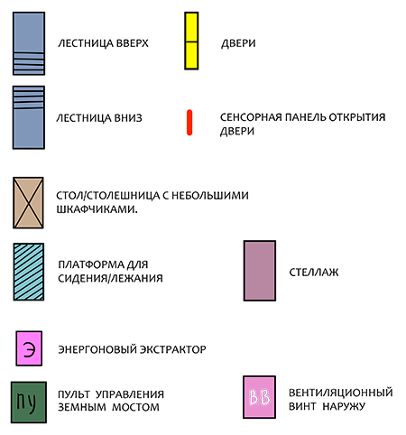
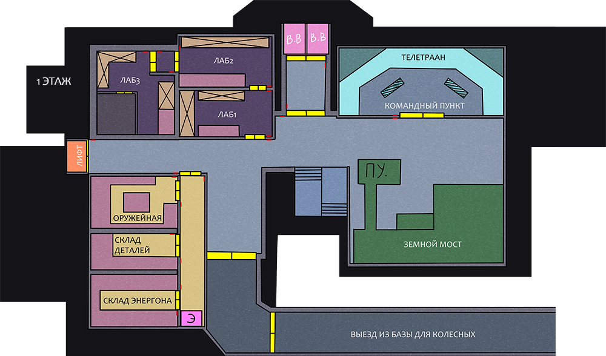

База: уровень 1
Первый этаж базы.
Здесь располагаются служебные помещения, а также помещения общего пользования.
В командный пункт вас, конечно, не пустят просто так и что-нибудь взорвать в лаборатории не разрешат, но вот покопаться в детальках или разжиться парой-тройкой кубов энергона - вполне.
 Уровень доступа: смешанный (служебные помещения требуют допуск).
Уровень доступа: смешанный (служебные помещения требуют допуск).
Здесь располагаются служебные помещения, а также помещения общего пользования.
В командный пункт вас, конечно, не пустят просто так и что-нибудь взорвать в лаборатории не разрешат, но вот покопаться в детальках или разжиться парой-тройкой кубов энергона - вполне.
Для просмотра на экране смартфона рекомендуется использовать альбомную ориентацию.
Чтобы посмотреть местоположение объекта кликните на его название ниже:


Дополнительная информация доступна при клике на подсвеченный объект или иконку



Всё по классике: открыть ворота, трансформироваться/побежать, улизнуть с базы, пока не настиг гаечный ключ медика.
 Закрывайте за собой двери!
Закрывайте за собой двери!
Собственно, чтобы что-то бабахнуть, нужно запрашивать разрешение.

Выход из базы
Преимущественно для колесных. Всё по классике: открыть ворота, трансформироваться/побежать, улизнуть с базы, пока не настиг гаечный ключ медика.
Земной мост
Если надо куда-то попасть в пределах планеты, то это отсюда.
Главное убедитесь, что введенные через панель управления координаты
не забросят вас в еще большие неприятности.
Командный пункт
Здесь сидит суровый управляющий станцией, за всеми наблюдает, а отдельных нарушителей спокойствия
вызывает на допросы. Лучше ему на оптику не попадаться.
Лаборатории
Три лаборатории разного уровня защищенности. В смысле от всяких бабахов. Собственно, чтобы что-то бабахнуть, нужно запрашивать разрешение.
Оружейная
Здесь можно забрать свое оружие, а если быть достаточно расторопным - то и прихватить чужое.
Склад деталей
Сюда попадают полезные запчасти павших товарищей. Но есть и положительный момент:
что-то из этого может вам пригодиться для будущего тюнинга.
Склад энергона
Здесь просто много вкусного.